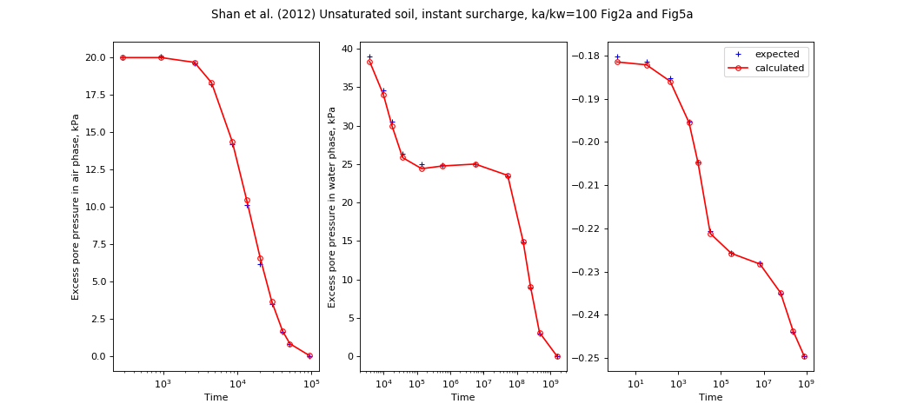

speccon example code: speccon1d_unsat_surcharge_ka_divide_kw_100_shanetal2012.py¶
# speccon1d_unsat example (if viewing this in docs, plots are at bottom of page)
# Unsaturated soil 1 dimensional consolidation. Surcharge load
# Compare with Shan et al. (2012) Fig2a and Fig5a
# The orignal Shan et al. (2012)
# is implemented separately in geotecha.consolidation.shanetal2012.
# Shan, Zhendong, Daosheng Ling, and Haojiang Ding. 2012. 'Exact
# Solutions for One-dimensional Consolidation of Single-layer
# Unsaturated Soil'. International Journal for Numerical and
# Analytical Methods in Geomechanics 36 (6): 708-22.
# doi:10.1002/nag.1026.
# This file should be run with python. It will not work if run with the
# speccon1d_vr.exe script program.
from __future__ import division, print_function
import numpy as np
from geotecha.speccon.speccon1d_unsat import Speccon1dUnsat
import matplotlib.pyplot as plt
#dsig=100kPa instantly
#ka/kw=100
#
#other data:
#n = 0.50
#S=0.80
#kw=10^10m/s
#m1kw=-0.5x10**4 kPa-1
#h=10m
#mw2=-2.0x10**4 kPa-1
#ma1k=-2.0x10**4 kPa-1
#ma2=1.0x10**4 kPa-1
#
#gamw= 10000N
#ua_=uatm=101kPa,
#R=8.31432J/molK
#t0 = 20 degrees C,
#T =(t0+273.16)K,
#wa=29x10**3 kg/mol
#
#Note to get (dua, duw) = (0.2, 0.4) * dsig need ua_=111kPa
#
#Note digitized settlement data does not include immediate
#undrained deformation. data is S/S0, S0=m1ks*q0*H
#Expected values, digitised from the article
#tua, tuw, tset = time values for pore air and pore water pressure settlement output
#avp = average excess pore pressure
#z = depth values
#pora, porw = excess pore pressure at time t and depth z in air and soil.
#settle = settlement
tua = np.array([ 282.785, 940.375, 2644.42, 4496.89, 8551.43,
13372.5, 20335.4, 29242.8, 40893.1, 51137.3, 94564.5])
tuw = np.array([3864.8, 10030.2, 18091, 37532.2, 139897,
599326, 5619520, 52739300, 153442000,
254730000, 473013000, 1577810000])
tset = np.array([1.37958, 33.341, 423.929, 3230.37, 8513.52,
32049.3, 305234, 6701640, 61859100,
239757000, 790152000])
z = np.array([0.5])
pora = 100 * np.array(
[[0.200018, 0.200429, 0.196143, 0.182068, 0.142173,
0.101492, 0.0619839, 0.0349948, 0.0162211, 0.00840019,
0.000194669]])
porw = 100 * np.array(
[[0.389736, 0.346022, 0.30544, 0.263294, 0.249989, 0.249159,
0.249864, 0.234187, 0.148347, 0.0898279, 0.0289645,
0.0000625543]])
# calculate expected settlement
m1kw = -0.5e-4
m2w = -2e-4
m1ka = -2e-4
m2a = 1e-4
uai = 20
uwi = 40
dsig = 100
h=10
set0 = (m1ka + m1kw) * (dsig-uai) + (m2a + m2w) * (uai-uwi)
set0*= h
settle = set0 + dsig * h * (m1ka + m1kw) * np.array(
[[0.00108303, 0.00595668, 0.0211191, 0.0611913, 0.0990975,
0.162455, 0.182491, 0.192238, 0.220397, 0.255596,
0.278339]])
reader = ("""\
H = 10 #m
drn = 0
neig = 20
mvref = 1e-4 #1/kPa
kwref = 1.0e-10 #m/s
karef = kwref * 100 #m/s
Daref = karef / 10 # from equation ka=Da*g
wa = 29.0e-3 #kg / mol
R = 8.31432 #J/(mol.K)
ua_= 111 #kPa
T = 273.16 + 20
dTa = Daref /(mvref) / (wa*ua_/(R*T))/ H ** 2
dTw = kwref / mvref/ 10 / H**2
dT = max(dTw,dTa)
kw = PolyLine([0,1], [1,1])
Da = PolyLine([0,1], [1,1])
S = PolyLine([0,1], [0.8] * 2)
n = PolyLine([0,1], [0.5] * 2)
m1kw = PolyLine([0,1], [-0.5]*2)
m2w = PolyLine([0,1], [-2.0]*2)
m1ka = PolyLine([0,1], [-2.0]*2)
m2a = PolyLine([0,1], [1.0]*2)
surcharge_vs_depth = PolyLine([0,1], [1,1])
surcharge_vs_time = PolyLine([0,0,10000], [0,100,100])
ppress_z = [0.5]
#avg_ppress_z_pairs = [[0,1]]
settlement_z_pairs = [[0,1]]
tvals = np.logspace(1, 10, 50)
tua = np.{tua}
tuw = np.{tuw}
tset = np.{tset}
tvals = np.hstack((tua,tuw, tset))
ppress_z_tval_indexes = slice(None, len(tua)+len(tuw))
#avg_ppress_z_pairs_tval_indexes = slice(None, None)#[0,4,6]
settlement_z_pairs_tval_indexes = slice(len(tua)+len(tuw),len(tua)+len(tuw)+len(tset))
save_data_to_file= False
save_figures_to_file= False
show_figures= False
""".format(tua=repr(tua), tuw=repr(tuw), tset=repr(tset)))
a = Speccon1dUnsat(reader)
a.make_all()
# custom plots
title = ("Shan et al. (2012) Unsaturated soil, instant surcharge, ka/kw=100 Fig2a and Fig5a")
fig = plt.figure(figsize=(13,6))
fig.suptitle(title)
#z vs ua
ax1 = fig.add_subplot("131")
ax1.set_ylabel('Excess pore pressure in air phase, kPa')
ax1.set_xlabel('Time')
ax1.set_xscale('log')
ax1.plot(tua, pora[0],
ls="None", color='Blue', marker="+", ms=5,
label='expected')
ax1.plot(tua, a.pora[0,:len(tua)],
ls='-', color='red', marker='o', ms=5, markerfacecolor='None',
markeredgecolor='red',
label='calculated')
# settlement vs t
ax3 = fig.add_subplot("133")
ax3.set_xlabel('Time')
ax3.set_ylabel('Settlement')
ax3.set_xscale('log')
ax3.plot(tset, settle[0],
ls="None", color='Blue', marker="+", ms=5,
label='expected')
ax3.plot(tset, a.set[0],
ls='-', color='red', marker='o', ms=5, markerfacecolor='None',
markeredgecolor='red',
label='calculated')
leg = ax3.legend()
leg.draggable()
#z vs uw
ax4 = fig.add_subplot("132")
ax4.set_ylabel('Excess pore pressure in water phase, kPa')
ax4.set_xlabel('Time')
ax4.set_xscale('log')
ax4.plot(tuw, porw[0],
ls="None", color='Blue', marker="+", ms=5,
label='expected')
ax4.plot(tuw, a.porw[0,len(tua):len(tua)+len(tuw)],
ls='-', color='red', marker='o', ms=5, markerfacecolor='None',
markeredgecolor='red',
label='calculated')
fig.subplots_adjust(top=0.9)#, bottom=0.15, left=0.13, right=0.94)
#fig.tight_layout()
plt.show()
(Source code, png, hires.png, pdf)
{kind=link}
{kind=link}
